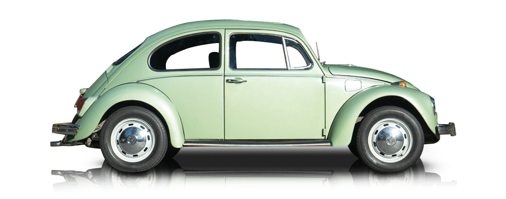
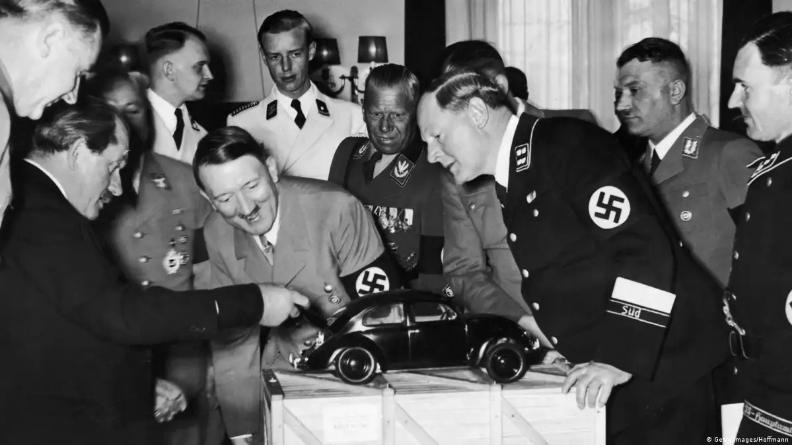

Gyártó
Volkswagen
Darabszám
21 529 464
Gyártási Év
1938 - 2003

Valószínűleg a New York Times használta először, 1938. július 3-án megjelenő cikkében a „Bogár” szót, amelyben „ezer és ezer csillogó kis bogarat” vizionál, amelyek be fogják népesíteni a német utakat.
Miután az autó az 1950-es években egyre nagyobb népszerűségre tett szert az Amerikai Egyesült Államokban, fokozatosan meghonosodott a szeretetreméltó Bogár (Beetle vagy Bug) becenév. A Volkswagen csak az 1960-as években vette át a Bogár megnevezést reklámkampányaiban, miután az autó a „Kicsi kocsi” filmekkel sztár lett és a Bogár név Németországban is elterjedt Käfer néven.

In the 1930s, Nazi ruler Adolf Hitler tapped Ferdinand Porsche (L) to design a "Volkswagen," or "people's car" — an affordable, mass-market vehicle that could carry a family and luggage. He came up with a two-door, rear-engine vehicle that could cruise at top speeds of 100 km/h (62 m/hr). Initial production of the car remained small.
Miután az autó az 1950-es években egyre nagyobb népszerűségre tett szert az Amerikai Egyesült Államokban, fokozatosan meghonosodott a szeretetreméltó Bogár (Beetle vagy Bug) becenév. A Volkswagen csak az 1960-as években vette át a Bogár megnevezést reklámkampányaiban, miután az autó a „Kicsi kocsi” filmekkel sztár lett és a Bogár név Németországban is elterjedt Käfer néven.
It took a while for the Beetle to become popular in the US, however, in part due to the car's Nazi roots. But a 1960s marketing rebrand and the car's starring role in the 1968 movie "The Love Bug" as Herbie (above), a Beetle with a mind of its own, sealed its place in the hearts of Americans — and in their garages.